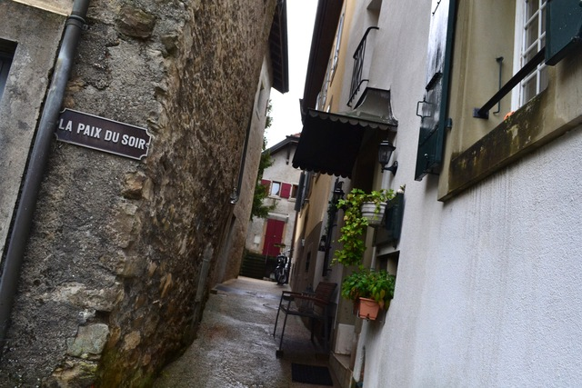
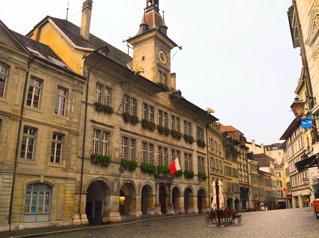
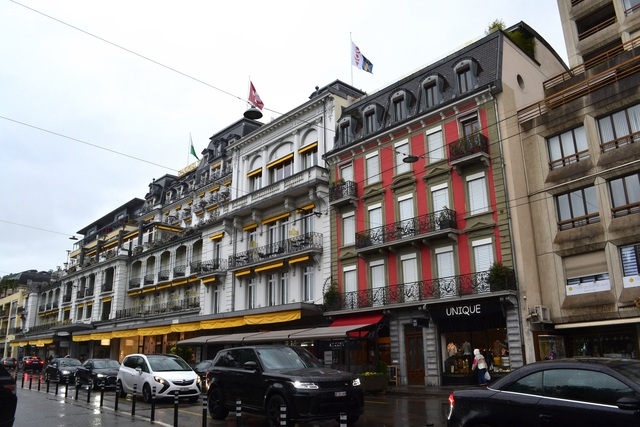

グリュニエールチーズの由来になった街。丘の上に可愛い城下町が広がります。


ローザンヌの少し東、葡萄畑で唯一世界遺産に登録されてるラヴォー地区。レマン湖畔に迫る崖の急斜面に精巧に組まれた石垣の段々畑が広がり、摘み取りが終わり風に吹かれて散るのを待つだけの黄葉が茜色に染まります。夕暮れ時の葡萄畑の彼方にスイスの山々が広がります。ここのトレッキングコースはおすすめ。
シエールの街から路線バスで九十九折の山道を1時間、アニヴィエ渓谷の最奥部にあるジナル村を訪れた。ツェルマットがある谷の一本西側の谷に位置する。ツェルマットと違って観光化されておらず、雄大な山々に抱かれたスイスの農村の原風景が感じられる素晴らしい場所だった。ジナル村の目抜き通りにはねずみ返しのついた古納屋が並び晩秋の柔らかい陽光が降り注ぐ。アルプスの隠れ里。
以前ジナル村に1ヶ月間滞在された日本人の方の動画を見たことがあって、いつか訪れてみたいと思っていた。観光地ではない集落めぐりの良さって「用意されてない感動」が見つかるところだと思う。

標高1670メートル。空気は冷たく雪山が迫る風景はどこか上高地のような雰囲気がある。
Anivier渓谷にある村。標高1572メートル。古納屋に降り注ぐ陽光がやわらかい。
対岸の遠くに見えるのはAyer村だろうか。この渓谷の村々は本当に美しい。
マッターホルンで有名なツェルマットですがちょっと観光地化されすぎているきらいがあった。ねずみ返しのついた古納屋がところどころに残されてはいるものの、観光開発される街の中に無理やり保存されているような感じがある。
この日は快晴に恵まれたので夕闇に包まれていくマッターホルンを見よう丘を登った。刻一刻と空の色が変化し村の明かりが灯り出して闇が光を越えていく瞬間。
日が昇る前に丘の上のトゥールビヨン城まで登ってみた。いまは廃墟になっている。朝日がシオンの葡萄畑に色を連れてくる。
ヌーシャテル湖畔の町。地名も建築様式もフランスの影響が色濃い。かつての市壁やシュノー城をはじめ中世の遺構が至るところに残されてて、長い時間だけが作り出すことのできる雰囲気がいい。

時計塔からまっすぐに続く目抜き通りはベルンの街並みのミニチュアのよう。
スイス最大のロマネスク建築の教会がある。
大きく蛇行するサリーヌ川に沿った丘の上に町が広がる様子はベルンの街並みを思い出させる。サリーヌ川をドイツ語とフランス語の言語境界線が通過している。
葡萄畑で唯一世界遺産に登録されているレマン湖畔のラヴォー地区。絹のような細い雨が湖畔の急斜面に一面に黄色く色付いた葡萄畑とぽつぽつと点在する家々の屋根瓦をしっとりと濡らしているのが美しい。遠くにローザンヌの街が見える。


レマン湖畔の街。オリンピック博物館のイメージしかなかったですが一歩裏路地に入ると素敵な風景がたくさんある街だった。フランスが近いのでフランス建築の影響を感じる建物が多い。スイスのドイツ/イタリアに近い地域はドイツ/イタリア建築の影響があって、スイスを旅していると文化は連続的に混じり合うものなのだと感じる。



この日はパリからミュンヘンまで各駅停車で行った。 パリを朝の6時に出発して、どこまでも続く牧草地の地平線から太陽が上るのを眺め、バーゼルを経由してミュンヘンに着いたのは夜7時。

ドイツ・フランス・スイスの三国国境に位置する都市バーゼル。 ゆったり流れるライン川の畔に並ぶ街並みが美しい。 夏の時期は川岸近くを泳いで下ることができるのだが、 想像以上に流れが速く、ロープなどの仕切りもないうえに途中に橋桁があったり渡し船が運行してたりするのでそれらを上手に避けて「流されていく」必要がある。 相当泳ぎに自信がないと危ないと思うのだが、 この時期スイスのいろんな街で人々が川に流されているのを見かけるので、スイスっ子にとっては定番のレジャーなのだろう。